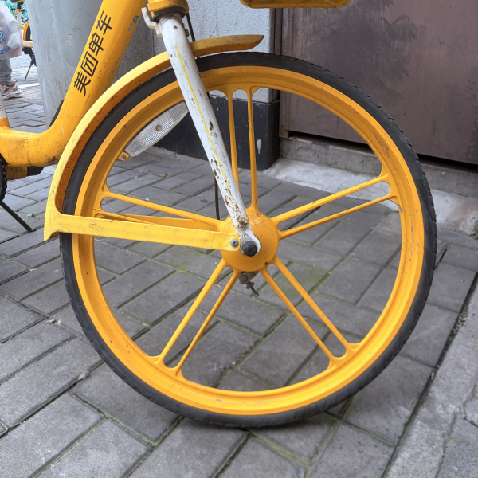
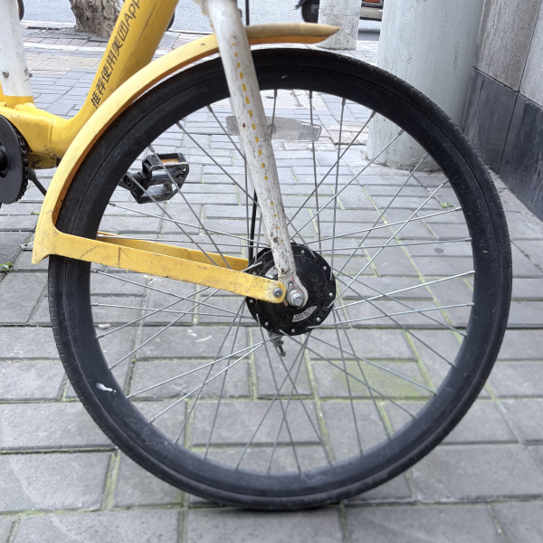
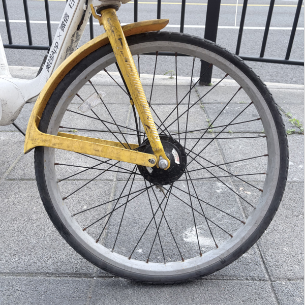

Mechanical lock. Yellow plastic wheel panel. Early generation frame.
Mechanical lock. Yellow plastic wheel panel. Early generation frame.

Mechanical lock. Metal wheel panel. Same major structure as V1.0.

Electronic lock. Rigid front fork. Structural jump from V1 platform.

Electronic lock. Minor detail iteration on the V2 platform.

Electronic lock. Suspension fork. Current mainline version.

Branch line. Remolded front assembly. Did not continue as mainline.

Yellow plastic side panel used on early production frames.

Metal spoke wheel replacing the early plastic panel.

Wheel variant found on the branch line version.
这是一个持续生长的城市观察档案。记录美团小黄车从第一代至今的结构性演化。
不设终点。不追求完整。只追求诚实。
选择只记录美团，本身就是一个立场。定义什么是大版本，本身就是一个视角。用客观的语言，呈现一个有立场的观察。